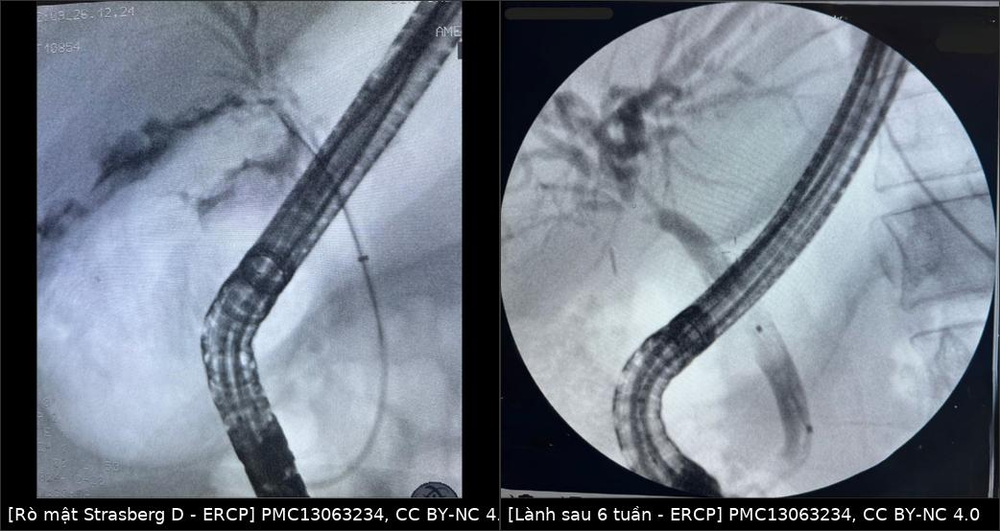
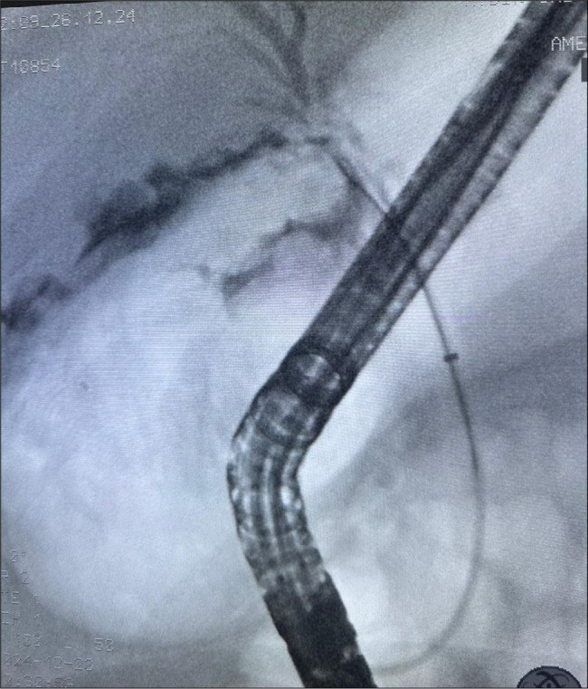
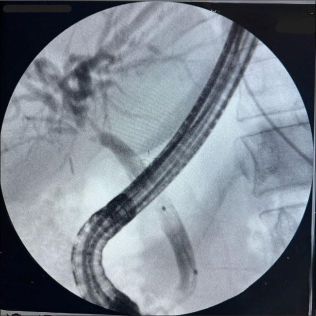

108 — Tổn thương đường mật sau cắt túi mật: Strasberg–Bismuth, MRCP/CE-MRCP, khi nào nong–stent vs mổ lại / Post-cholecystectomy bile duct injury (BDI)
Tags: pattern:ro-mat pattern:hep-duong-mat pattern:hep-sau-mo vung:duong-mat vung:gan score:Strasberg score:Bismuth protocol:MRCP protocol:CE-MRCP protocol:ERCP incidentaloma:hep-sau-cat-tui-mat
Mức chắc chắn (certainty): tổng hợp y văn (literature synthesis) — số liệu lấy từ hướng dẫn WSES 2020 về phát hiện–xử trí BDI (PMC8190978, CC BY 4.0), nghiên cứu 33 ca ERCP về Strasberg dự báo mất thông đường mật 30 ngày (PMC13418495, CC BY-NC 4.0), loạt 106 ca của hội đồng giám định Đức về phân loại và tỷ lệ vị trí tổn thương (PMC12857022, CC BY 4.0) và một ca nguyên văn Strasberg D điều trị bằng stent qua ERCP (PMC13063234, CC BY-NC 4.0). Không có ca nguyên văn riêng của nhóm.
Bài này là bài "đọc đúng tổn thương" của cụm mật sau mổ. 107 dạy kỹ thuật MRCP/HBP; 133 dạy hẹp sau ghép gan; 137 dạy theo dõi stent; 179 dạy hoại tử ống mật sau can thiệp u gan. Bài 108 trả lời câu hỏi của bác sĩ CĐHA khi nhận bệnh nhân vừa cắt túi mật, sốt/đau/vàng da/rò dịch: tổn thương loại gì, ở đâu, còn liên tục hay không — vì đó là thứ quyết định nội soi hay mổ lại.
1. Tổng quan bệnh học – cơ chế hình ảnh
- Định nghĩa: tổn thương đường mật (bile duct injury — BDI) là tổn thương cây mật trong hoặc ngay sau cắt túi mật, biểu hiện sớm bằng rò mật (bile leak) và muộn bằng hẹp (stricture). Đây là biến chứng nặng nhất của cắt túi mật: tử vong liên quan BDI 1,8–4,6%, xơ gan mật thứ phát 2,4–10,9%, hẹp miệng nối sau mổ 4,1–69% (đa số 10–20%, trung vị 11–30 tháng) (WSES 2020, PMC8190978).
- Tần suất — con số phải nhớ: cắt túi mật nội soi (laparoscopic cholecystectomy — LC) 0,4–1,5%, mổ mở 0,2–0,3%; thể nặng (major) 0,1% ở mổ phiên và 0,3% ở mổ cấp cứu; tính mọi thể thì 0,4% và 0,8% (WSES 2020). Gộp 151 nghiên cứu / 505.292 bệnh nhân: BDI 0,32–0,52%, trong đó major 0,28% và rò mật 0,46% (tổng 0,74%) (WSES 2020 dẫn Pucher và cs).
- TẠI SAO tổn thương hay bị bỏ sót — và vì sao hình ảnh là mấu chốt: trong 106 ca được giám định, chỉ 30,2% phát hiện trong mổ (PMC12857022); y văn ghi 25–32% (PMC13063234). Nghĩa là ~70% biểu hiện sau mổ bằng một hội chứng mơ hồ: đau bụng, chướng, sốt, rò dịch qua dẫn lưu, vàng da, tăng bilirubin/ALP. Không có triệu chứng nào đặc hiệu → chẩn đoán hình ảnh phải trả lời 3 câu: (1) có rò đang hoạt động không? (2) rò ở đâu? (3) đường mật còn liên tục không?
- Vật lý — vì sao CT không đủ để gọi tên "rò mật": dịch mật có tỷ trọng gần nước (khoảng 0–20 HU), gần như trùng dải HU của dịch thanh mạc, dịch tụ sau mổ và mủ; máu tụ 35–70 HU mới tách được. WSES nói thẳng: US và CT không phân biệt được rò mật với tụ máu/mủ/dịch thanh mạc, cũng không xác định được vị trí và tính "hoạt động" của rò (PMC8190978). Vì vậy:
- MRCP T2 nặng (heavily T2-weighted): mật là nước đứng yên → T2 rất dài → tín hiệu rất cao, mô đặc/tĩnh mạch tối; cho hình thái cây mật nhưng không cho biết rò có hoạt động (dịch tự do ngoài ống cũng sáng).
- CE-MRCP với thuốc cản quang đào thải qua mật (gadoxetate, hepatobiliary phase — HBP): thuốc vào tế bào gan → bài tiết vào ống mật, nên chỉ mật mới sáng dần theo thời gian; chỗ thoát ra ngoài lòng ống chính là rò thật. Thời điểm chụp tốt nhất 60–90 phút; so với MRCP thường, CE-MRCP nâng độ nhạy 53–63% → 76–82%, độ đặc hiệu 51–66% → 100%, độ chính xác 55–63% → 75–91% (WSES 2020 dẫn chuỗi 99 bệnh nhân).
- HIDA (hepatobiliary scintigraphy): cho biết rò còn hoạt động và đường đi của mật, nhưng độ phân giải không gian kém; có 3 bẫy: không thấy hoạt tính ở tá tràng → dễ đọc nhầm thành tắc hoàn toàn; kém nhạy khi suy gan; khiếm khuyết lớn thì mật chảy theo đường ít cản nhất (WSES 2020).
- TẠI SAO hẹp xuất hiện MUỘN (11–30 tháng): cơ chế chính là thiếu máu thành ống (kẹp/clip, đốt điện, bóc tách rốn gan) → viêm xơ → hẹp; kèm tổn thương mạch (trong 106 ca giám định, 13,2% có tổn thương động mạch kèm theo, và tổn thương mạch là yếu tố tiên lượng xấu) (PMC12857022, PMC8190978). Vì quá trình xơ hóa cần thời gian, ảnh "bình thường" ngay sau mổ không loại trừ hẹp — bệnh nhân có thể quay lại sau hàng tháng đến hàng năm với giãn đường mật trong gan + teo thùy gan.
- TẠI SAO phân độ quyết định điều trị (số liệu 30 ngày): trong 33 ca được ERCP, Strasberg là yếu tố DUY NHẤT gắn với mất thông đường mật trong 30 ngày: nhóm major (E) mất thông 75,0% so với 25,0% ở nhóm minor (p = 0,021); trung vị mất thông 24 ngày ở nhóm major, nhóm minor không đạt trung vị trong 30 ngày (log-rank p = 0,030) (PMC13418495). Tuổi, giới, AST/ALT, bilirubin, đường mổ, thời điểm chẩn đoán và thời điểm sửa đều không dự báo (p > 0,05).
- Phản biện (cửa 3 — trung thành nguồn): bài này tự mâu thuẫn — phần Methods ghi minor A–D, major E, còn phần Abstract ghi minor A–C, major D–E. Con số 75% vs 25% vì thế phải đọc theo Methods/WSES (major = E), và cỡ mẫu 33 ca là rất nhỏ. Không dùng bài này để "chốt" tiên lượng từng bệnh nhân; dùng nó để nhớ rằng mức độ giải phẫu mới là biến số có ý nghĩa, không phải men gan.
- Phân loại — bộ khung tối thiểu (Strasberg 1995, phổ biến nhất):
| Kiểu | Tổn thương giải phẫu | Còn liên tục? | Hướng xử trí điển hình |
|---|---|---|---|
| A | Rò từ mỏm ống túi mật hoặc ống nhỏ ở giường gan (duct of Luschka) | Có | Dẫn lưu ± ERCP stent |
| B | Tắc một nhánh (thường ống ngành phải lạc chỗ bị clip), không rò | Có (nhánh bị tắc thì không) | Theo dõi/teo thùy; can thiệp nếu có triệu chứng |
| C | Rò từ nhánh bị tắc (nhánh lạc chỗ bị cắt không buộc) | Có | ERCP/stent hoặc mổ tùy mức |
| D | Tổn thương BÊN ống mật chủ/ống gan chủ (rách một phần chu vi) | Có | ERCP + stent ± sphincterotomy |
| E | Đứt/hoại tử chu vi ống mật chủ–ống gan chủ; E1 mỏm > 2 cm, E2 mỏm < 2 cm, E3 trần chỗ hợp lưu còn, E4 trần chỗ hợp lưu mất, E5 E1–E3 + hẹp một ống gan phải biệt lập | Không | Roux-en-Y hepaticojejunostomy (RYHJ) |
Nguồn bảng: định nghĩa A–D và E1–E5 theo bảng phân loại của WSES 2020 (PMC8190978); ca nguyên văn Strasberg D = "khuyết một phần thành sau ống gan chủ, còn rò" (PMC13063234).
- Phân loại khác — biết để không "lạc ngôn ngữ": Bismuth (1982) chia theo vị trí hẹp so với chỗ hợp lưu; ATOM (2013) gộp giải phẫu + thời điểm phát hiện + cơ chế và được WSES khuyến cáo "nên phổ biến" nhưng quá phức tạp cho thực hành thường quy; BABD (2026) phân loại tổn thương cấp theo vị trí + mức độ, phân được 99% ca trong khi 11 hệ cũ tốt nhất chỉ 82–86% (PMC12857022). Bài này dùng Strasberg làm ngôn ngữ chính vì đó là hệ ERCP/mổ cùng dùng.
2. Mẫu hình + chẩn đoán phân biệt theo vị trí (gamut)
- Mẫu hình 1 — rò mật, đường mật KHÔNG giãn: tụ dịch dưới gan/phải, dịch quanh gan, hoặc dịch tự do; mật vẫn xuống tá tràng. Nghĩ tới A (mỏm ống túi mật/ống Luschka), C (nhánh lạc chỗ), D (rách bên).
- Mẫu hình 2 — hẹp có giãn đường mật TRÊN chỗ hẹp, dưới xẹp: hẹp lành tính sau mổ, hẹp do clip, hoặc B (tắc một nhánh → giãn khu trú một phân thùy, thường phải).
- Mẫu hình 3 — mất liên tục / không thấy ống mật chủ dưới chỗ tổn thương: E; trên MRCP thấy mỏm cụt trên và không opacify đoạn dưới, thường kèm tụ dịch lớn hoặc đường hầm rò.
- Mẫu hình 4 — ứ mật + tổn thương mạch: giãn đường mật + nhồi máu/teo thùy gan, giả phình động mạch gan phải hoặc tụ máu quanh rốn gan; nghĩ tổn thương mạch kết hợp (13,2%) — đây là nhóm làm hẹp tái phát và mổ khó.
- Gamut theo vị trí (từ dưới lên):
- Mỏm ống túi mật / giường gan: A (rò ống túi mật, ống Luschka), máu tụ giường gan, áp-xe giường gan.
- Ống gan chủ / ống mật chủ: D (rách bên), E1–E2 (đứt, mỏm dài/ngắn), hẹp do clip, hẹp do đốt điện.
- Chỗ hợp lưu / rốn gan: E3–E4, tổn thương ống gan phải lạc chỗ (B/C), tổn thương động mạch gan phải.
- Ngoài đường mật nhưng cùng bối cảnh: rò ống tiêu hóa, rò tá tràng, tụ dịch quanh tụy, huyết khối tĩnh mạch cửa.
- Gợi nhớ 3 câu hỏi của gamut: (1) Còn liên tục không? (2) Rò đang hoạt động không? (3) Có tổn thương mạch kèm theo không? Trả lời được 3 câu này là đã chọn được ERCP hay RYHJ.
3. Bảng so sánh phân biệt (ma trận đối chiếu)
| Thực thể (entity) | Hình ảnh điển hình | Chốt vào (rule-in) | Chốt loại (rule-out) | Gợi ý xác nhận |
|---|---|---|---|---|
| Strasberg A — rò mỏm ống túi mật / ống Luschka | Tụ dịch dưới gan phải, đường mật không giãn; MRCP: cây mật bình thường + dịch ngoài ống | Rò xuất hiện ngay sau mổ, đường mật còn liên tục, không giãn | Mất liên tục ống mật chủ hoặc giãn đường mật trong gan → không phải A đơn thuần | ERCP: thấy mật thoát từ mỏm ống túi mật; HIDA dương tính |
| Strasberg B — tắc nhánh lạc chỗ | Giãn khu trú một phân thùy (thường VI–VII), không rò, ống mật chủ bình thường | Giãn một vùng gan + không rò + tiền sử clip rốn gan | Giãn lan cả hai thùy → nghĩ hẹp ống chính, không phải B | MRCP/CE-MRCP; CT tĩnh mạch cửa thấy nhánh không nối |
| Strasberg C — rò từ nhánh bị tắc | Rò + giãn khu trú cùng một phân thùy; dịch tụ quanh gan phải | Rò kèm giãn một phân thùy | Chỉ rò mà không giãn khu trú → nghĩ A/D | ERCP có thể không thấy nhánh lạc chỗ — cần MRCP |
| Strasberg D — rách bên ống chính | Rò từ thành ống (thường thành sau ống gan chủ), ống còn liên tục, đoạn dưới vẫn opacify | Thấy thuốc thoát ra nhưng vẫn thấy ống phía dưới | Không thấy ống dưới chỗ tổn thương → nghi E | ERCP (vừa chẩn đoán vừa đặt stent); CE-MRCP |
| Strasberg E1–E2 — đứt ống, mỏm dài/ngắn | Mất liên tục, mỏm trên cụt, không opacify đoạn dưới; tụ dịch lớn hoặc đường hầm rò | Mất liên tục hoàn toàn + mỏm cụt rõ | Còn dòng mật qua chỗ hẹp (dù hẹp) → không phải đứt | MRCP + ERCP/PTC; chuyển trung tâm HPB |
| Strasberg E3–E5 — tổn thương chỗ hợp lưu | Mất liên tục tại rốn gan, không thấy ống gan phải/trái; có thể teo thùy | Mất hình chỗ hợp lưu + giãn đường mật trong gan hai bên | Còn trần chỗ hợp lưu → E1–E2 | CE-MRCP + MRCP 3D; PTC hai bên nếu cần bản đồ |
| Biloma (tụ mật) đơn thuần | Khối dịch 0–20 HU, bờ rõ, không ngấm, dưới gan/phải | Dịch mật ngoài ống + không thấy thoát thuốc trên CE-MRCP | Thấy thuốc thoát từ ống → rò đang hoạt động | US/CT theo dõi; HIDA nếu còn nghi |
| Máu tụ / áp-xe sau mổ | Máu 35–70 HU, có thể tăng đậm độ; áp-xe có vách ngấm + khí | HU cao (máu) hoặc khí + vách ngấm (áp-xe) + sốt | Dịch đồng nhất 0–20 HU, không khí, không vách → nghĩ biloma | CT có cản quang; cấy dịch |
| Hẹp lành tính KHÔNG do mổ | Hẹp dài, nhiều ổ (PSC), hoặc hẹp do viêm tụy | Bối cảnh không mổ, hẹp nhiều ổ, thành dày | Hẹp đơn độc đúng vị trí mổ, bờ nhẵn → hậu phẫu | MRCP + CA 19-9/cytology nếu nghi ác |

Trái: ERCP trong mổ — thuốc thoát ra từ thành sau ống gan chủ, ống còn liên tục = Strasberg D. Phải: ERCP kiểm tra sau 6 tuần — cây mật opacify đều, không còn thoát thuốc. Nguồn: Turk J Trauma Emerg Surg 2026 (PMC13063234) Fig. 2 và Fig. 4, CC BY-NC 4.0; ghép bằngtools/make_composite.py (letterbox, không crop/kéo giãn).
Ba dấu hiệu quyết định trên phim
- Còn liên tục hay không: nếu thấy được ống mật chủ phía dưới chỗ tổn thương → còn liên tục (A/C/D); không thấy → nghi E và không được đặt stent qua nội soi như một "giải pháp cuối".
- Rò "hoạt động" chỉ chứng minh được bằng chất đánh dấu: thuốc cản quang bài tiết qua mật (CE-MRCP) hoặc HIDA hoặc ERCP/PTC; dịch tụ đơn thuần trên CT không phải bằng chứng rò.
- Tổn thương mạch kèm theo: tìm giả phình động mạch gan phải, tụ máu rốn gan, nhồi máu/teo thùy — vì nhóm này hẹp tái phát và mổ lại khó hơn.
4. Protocol chụp + hệ phân độ/điểm chuẩn hóa
- Bước 1 — siêu âm (US): công cụ đầu tay, rẻ, tại giường: tìm dịch tự do/dịch khu trú, giãn đường mật, và Doppler đánh giá mạch gan (WSES 2020). Hạn chế: không phân biệt bản chất dịch, không định vị được chỗ rò.
- Bước 2 — CT bụng 3 thì (triphasic CT) có cản quang: WSES khuyến cáo là hình ảnh đầu tay để tìm tụ dịch trong/ quanh gan, giãn đường mật, tổn thương mạch (giả phình, huyết khối), teo thùy gan và biến chứng muộn (xơ gan mật thứ phát). CT nhạy hơn US với tụ dịch nhỏ và biến chứng mạch.
- Bước 3 — MRCP ± CE-MRCP (gadoxetate, HBP 60–90 phút): "tiêu chuẩn vàng" cho hình thái cây mật trên và dưới chỗ tổn thương; CE-MRCP để chứng minh rò và định vị (Se 76–82%, Sp 100%). Hạn chế: khi có tắc hoàn toàn, đoạn dưới không opacify → dễ đọc quá mức "đứt"; ống ngoại vi không hiện rõ (WSES 2020).
- Bước 4 — HIDA: khi nghi rò lượng ít, đường mật không giãn, muốn biết rò còn hoạt động; nhớ bẫy "không thấy tá tràng = tắc" và kém nhạy khi suy gan.
- Bước 5 — ERCP (nội soi mật–tụy ngược dòng) hoặc PTC: vừa chẩn đoán vừa điều trị. Chọn ERCP khi còn liên tục hoặc hai mỏm rất gần trên MRCP; kỹ thuật đa stent (multistenting) cho hẹp/rò. Với E (mất liên tục) ERCP không sửa được — chỉ để giải áp tạm nếu cần.
- Ngưỡng thời gian — "cửa sổ" của phẫu thuật: tổn thương E1–E2 phát hiện trong 72 giờ → chuyển trung tâm HPB, có thể RYHJ cấp cứu; sửa sớm trong 48 giờ cho kết quả tốt, sau 48–72 giờ bước vào pha tăng sinh–lành sẹo làm mổ khó hơn (WSES 2020). Sửa muộn có kế hoạch (sau khi kiểm soát nhiễm trùng, dinh dưỡng) cho hẹp miệng nối ít hơn; sửa ngay tại chỗ bởi phẫu thuật viên không chuyên HPB là yếu tố nguy cơ độc lập cho hẹp/tái mổ (WSES 2020).
- Kết quả định lượng để tư vấn:
- ERCP + stent cho C/D (còn liên tục): thành công 89–96% (PMC13063234 dẫn y văn); ca nguyên văn: stent nhựa, kiểm tra 6 tuần, lành hoàn toàn, rút stent.
- Strasberg E qua ERCP: 75% mất thông trong 30 ngày, trung vị 24 ngày → phải theo dõi sát tháng đầu (PMC13418495).
- RYHJ cho E: hẹp miệng nối 10–20% (trung vị 11–30 tháng) → theo dõi chức năng gan + MRCP khi nghi.
- Sơ đồ quyết định (Mermaid):
flowchart TD
A[Nghi BDI sau cắt túi mật: đau, sốt, rò dịch, vàng da] --> B[US + CT 3 thì: tụ dịch, giãn mật, mạch]
B --> C{MRCP/CE-MRCP: còn liên tục?}
C -->|Còn liên tục: A, C, D| D[ERCP: sphincterotomy + stent nhựa]
D --> E{Kiểm tra 6-8 tuần}
E -->|Lành| F[Rút stent, theo dõi]
E -->|Còn rò hoặc hẹp| G[Đa stent hoặc chuyển HPB]
C -->|Mất liên tục: E1-E5| H[Chuyển trung tâm HPB]
H --> I{Phát hiện trong 72 giờ?}
I -->|Có| J[RYHJ sớm nếu đủ điều kiện]
I -->|Không| K[Kiểm soát nhiễm trùng, dinh dưỡng rồi RYHJ có kế hoạch]
B --> L{Có giả phình hoặc tụ máu rốn gan?}
L -->|Có| M[CTA/DSA, xử trí mạch trước khi mổ]
5. Biến thể bình thường và cạm bẫy
- Biến thể giải phẫu dễ gây tổn thương (và dễ đọc sai): ống gan phải lạc chỗ đổ vào ống túi mật/ống gan chủ thấp; ống Luschka (ống nhỏ giường gan) — rò sau mổ không phải tổn thương ống chính; ống túi mật cắm thấp. Trên MRCP, các ống này nhỏ, dễ bị bỏ qua → luôn đọc hệ thống 3D chứ không chỉ một lát.
- Cạm bẫy 1 — "dịch 0–20 HU là mật": sai. Dịch thanh mạc, mủ, dịch tụ sau mổ đều cùng dải HU. Muốn gọi biloma/rò mật phải có bằng chứng mật thoát ra (CE-MRCP, HIDA, ERCP) hoặc dịch mật qua dẫn lưu.
- Cạm bẫy 2 — HIDA âm giả: khi khiếm khuyết lớn hoặc suy gan, mật đi theo đường ít cản nhất và không xuống tá tràng → dễ đọc thành tắc hoàn toàn. Đừng loại trừ rò chỉ vì HIDA không thấy hoạt tính ở ruột.
- Cạm bẫy 3 — MRCP đọc quá "đứt": khi tắc hoàn toàn, đoạn dưới không opacify dù vẫn còn về giải phẫu → cần CE-MRCP/PTC hoặc ERCP trước khi kết luận E.
- Cạm bẫy 4 — mặt cắt ngang: dịch màng phổi vs dịch dưới hoành vs cổ trướng. Dịch dưới hoành phải nằm sau phúc mạc gan (khoảng bare area) và đẩy cơ hoành lên; dịch màng phổi nằm ngoài cơ hoành, dấu crus lệch (displaced crus sign) dương tính; cổ trướng ôm bờ gan/lách và chảy vào rãnh quanh gan. Cùng độ đậm, vị trí tương đối với cơ hoành/crus mới quyết định tên.
- Cạm bẫy 5 — clip kim loại: gây giả khuyết tín hiệu trên MRCP (như sỏi) và giả ứ trên CT; đối chiếu vị trí clip với đoạn ống giãn ở trên để không gọi nhầm sỏi.
- Cạm bẫy 6 — "rò nhỏ, tự hết": rò từ mỏm ống túi mật/ống Luschka thường tự bít hoặc đáp ứng dẫn lưu; không vội mổ. Ngược lại, rò kèm mất liên tục thì không chờ — chờ chỉ làm tăng nhiễm trùng và xơ hóa.
- Cạm bẫy 7 — thoả mãn tìm kiếm (satisfaction of search): thấy tụ dịch là dừng, bỏ tổn thương mạch (13,2%) và giãn đường mật trên — hai thứ đổi hoàn toàn kế hoạch điều trị.
6. Tự lượng giá — Blind Quiz (không cần app)
Ca 1 — Bệnh nhân đau bụng và sốt 5 ngày sau cắt túi mật nội soi; dịch qua dẫn lưu màu vàng.

- Gợi ý lâm sàng: tổn thương được nhận ra trong mổ, xử trí cùng lúc; không có vàng da.
- Câu hỏi: (1) Thuốc thoát ra ở đâu, từ thành ống hay từ mỏm cụt? (2) Đường mật còn liên tục không? (3) Xếp Strasberg kiểu gì, và vì sao không cần RYHJ?
Bấm để hiện đáp án (findings + chẩn đoán)
- Dấu hiệu: ống soi ERCP nằm trong tá tràng–ống mật; thuốc thoát ra từ thành sau ống gan chủ thành một đám mờ ngoài lòng ống, trong khi đoạn ống phía dưới vẫn thấy thuốc.
- Chẩn đoán: Strasberg D (rách bên, một phần chu vi, còn liên tục) — đúng như mô tả ca nguyên văn: "partial defect with bile leakage on the posterior wall of the common hepatic duct".
- Vì sao không RYHJ: còn liên tục nên nội soi + stent đủ; RYHJ dành cho E (mất liên tục/hoại tử chu vi).
- Nguồn ảnh: Turk J Trauma Emerg Surg 2026, PMC13063234 Fig. 2, CC BY-NC 4.0.
Ca 2 — Cùng bệnh nhân, 6 tuần sau.

- Câu hỏi: (1) Còn rò không? (2) Dấu hiệu nào trên ảnh cho phép rút stent? (3) Nếu 6 tuần vẫn còn thoát thuốc thì bước tiếp theo là gì?
Bấm để hiện đáp án
- Dấu hiệu: cây mật opacify đều, không còn đám mờ ngoài lòng ống, không hẹp đoạn ống gan chủ.
- Kết luận: lành hoàn toàn → rút stent; ca nguyên văn: stent nhựa rút sau 6 tuần, xét nghiệm 6 tuần bình thường, theo dõi 4 và 8 tháng không biến chứng.
- Nếu còn rò/hẹp: đa stent hoặc chuyển trung tâm HPB — đừng "đặt stent mãi"; hẹp hậu phẫu muộn có thể xuất hiện 11–30 tháng sau.
- Nguồn ảnh: Turk J Trauma Emerg Surg 2026, PMC13063234 Fig. 4, CC BY-NC 4.0.
Ca 3 — Bệnh nhân 52 tuổi, 8 tháng sau cắt túi mật, đau hông lưng phải tái diễn + ALP tăng; CT có giãn đường mật trong gan phải, ống mật chủ không giãn.
- Câu hỏi: (1) Hai chẩn đoán phân biệt hàng đầu? (2) Cần chuỗi xung/chất cản quang nào để phân biệt? (3) Khi nào gọi là "major" và đổi hướng điều trị?
Bấm để hiện đáp án
- Phân biệt: (a) Strasberg B — tắc một nhánh lạc chỗ gây giãn khu trú một phân thùy; (b) hẹp ống chính hoặc hẹp miệng nối — nhưng khi đó giãn thường lan hai bên, không khu trú.
- Chuỗi xung: MRCP 3D để thấy nhánh không nối + CE-MRCP (HBP 60–90 phút) để xác định còn thông và tìm rò; CT 3 thì để loại giả phình/tổn thương mạch và teo thùy.
- Đổi hướng: nếu mất liên tục ống chính hoặc tổn thương chỗ hợp lưu (E3–E5) → major, không đặt stent qua nội soi như điều trị triệt để; chuyển HPB để RYHJ.
- Nguồn số liệu: WSES 2020 (PMC8190978); loạt 106 ca (PMC12857022).
Bài liên quan chéo
- 107 – MRCP & gadoxetic acid HBP: kỹ thuật và ngưỡng
- 133 – Hẹp miệng nối & cholangiopathy thiếu máu sau ghép gan
- 137 – Theo dõi stent/dẫn lưu đường mật, di trú, tắc, nhiễm trùng
- 179 – Hoại tử ống mật & biloma sau can thiệp u gan
- 100 – Tổng quan hệ Bụng
Không dùng để chẩn đoán độc lập khi chưa có người hướng dẫn.